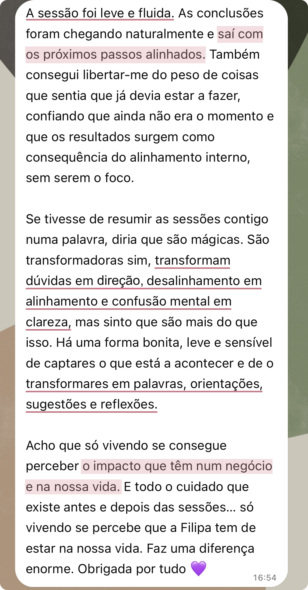

"They turn doubts into direction, misalignment into alignment and mental confusion into clarity."
— message transcribed from a client's voice note


A new way of seeing yourself and your business, and of choosing how you want to be seen
CEEN is an individual strategic analysis and guidance process for you to review your offer, your communication or the way you work in your business, without separating those decisions from who you are and the life you want to build.
You can arrive with a specific question or with several areas you would like to review together. As I listen, I pay attention to how you talk about the business, to what excites you or holds you back, to the weight you give certain decisions and to the contradictions that may surface.
This listening helps us recognise beliefs, fears and patterns that may be influencing your choices, even when you haven't yet identified them. We relate what we observe to the reality of the business and to what you want to change.
I help you recognise what makes sense to keep, reshape or let go of, and I offer concrete recommendations so you can decide your next steps.
Sometimes the biggest challenge is not building the business,
it is changing the way you see and position yourself in it...
The business is at the centre of CEEN, but it is never observed separately from you.
Your identity, energy, capacity, desires and life stage help us recognise what still represents you and how you want to keep working and evolving.
CEEN is designed for independent professionals and entrepreneurs who sell services, consultations, sessions, programmes, courses or products and infoproducts created from their knowledge and experience.
People choose you for your perspective, your approach, your method or the way you deliver your work. Whether the business carries your name or its own brand, you are a central part of the value it offers.
You already have an activity up and running, with offers, communication, clients or attempts to sell. Now you want to understand what you want to keep developing, how to present it and how you want to deliver it, fully aligned with you.
No borrowed formulas, no trying to fit into boxes!
Perhaps professional success means, for you, growing, increasing your income or reaching more people. Perhaps it means more free time, more autonomy, recognition, impact or fulfilment. Or perhaps it is making decisions with confidence, relating to your work with more lightness and no longer living certain professional questions with so much emotional strain.
You may already have achieved results that felt like success to you, and still feel that the way you work today no longer represents you. That does not take value away from what you have built. It may simply mean that the time has come to reshape it so it keeps pace with your evolution.
At CEEN, we do not assume that there is something wrong with you or your business, nor that there is an ideal version you should match or a formula for success you should follow. The best strategy is the one that fits you! And reviewing what you have built does not take value away from your journey; it lets you choose how you want to continue.
You may want to achieve new results and, at the same time, change how you are building them. These two needs can be part of the same moment in the business:
RESULTS AND DIRECTION
HOW YOU ARE IN THE BUSINESS
Not every difficulty is solved by a new strategy.
Sometimes the difficulty in charging, delegating or communicating is also linked to what that decision means to you, not only to the lack of a plan.
At CEEN, we connect business decisions to the person you are and to what you are living, because every choice is also shaped by what you want, what you fear and what you are able to sustain.
Clarity does not make the change for you, but it can shorten the time you spend insisting on a direction that drains you, postponing decisions, or trying to solve only in the business what also needs to be acknowledged in you.
When you are inside the business, it can be hard to tell what still makes sense from what you keep out of habit, fear or expectation. By reflecting back what I notice in the way you speak and asking questions about what seems contradictory, I help you see differences that can go unnoticed when you think alone. Not to choose for you, but so that you can recognise what you truly want to keep developing.
This case shows how that work can change a decision about the offer:
Reviewing the offer is also recognising what no longer represents you
This client came to the session convinced that she wanted to keep investing in certain services. Rationally, they seemed the safest options and the ones that made most sense to keep.
Through the questions I asked and the reflections on how she spoke about each service, it was the client herself who recognised that what she believed she "should" keep no longer matched what she really wanted to develop.
She decided to focus the offer and the communication on the services that still sparked her enthusiasm and, after that change, she began to generate sales again.
The business was no longer generating sales as before and the client was spreading her attention across several services. Some seemed safe to her and, for that reason, she believed she wanted to keep investing in them.
As she talked about each service, I asked questions and reflected back the differences, tensions and contradictions that appeared in the way she described them.
These reflections were not meant to tell her which to keep or let go of. They worked as a mirror so she could recognise, for herself, that some services were sustained mostly by habit, by security and by the idea that they should continue because they were already part of the business.
That difference was not yet clear to her before the session.
The client distinguished the services she believed she "should" keep from those she truly wanted to keep developing.
She decided to focus the offer and the communication on the latter and, after that change, she began receiving enquiries and generating sales again.
CEEN did not choose for her. It helped her see clearly so she could choose.
In practice, CEEN crosses two dimensions: what guides your choices and how those choices translate into the business.
ENERGETIC DIMENSION ·
THE PERSON WHO RUNS IT
Recognising what mobilises, holds back or drains you, and how that influences your choices and the role you want to hold in the business.
Depending on what is most relevant at this moment, we can observe your natural energy, desires, beliefs and patterns: elements that influence what you choose, communicate and are able to sustain.
STRATEGIC DIMENSION ·
THE TRANSLATION INTO BUSINESS
Translating that reading into criteria, priorities and concrete recommendations for the next phase of the business.
Depending on the question or the depth of the work, we can look at offers, services, prices, positioning, communication, content, sales pages, website, delivery formats, responsibilities and decisions.
Observing without structuring can bring more awareness, but leave you not knowing what to do with it. Structuring without observing can lead you to choose a strategy you can't, or don't want to, sustain. It is in this dialogue between energy and strategy that CEEN happens.
“Nobody had ever looked at my business this way!”
— comment from a client during a CEEN Session
If you want to go deeper into the approach, open the topics below: how the areas of the business influence each other and how your energy enters professional decisions.
Looking at the business as a system means observing, at the same time, the person who runs it, the identity that guides it, the structure that sustains it, the relationships it creates and the exchanges that make its continuity possible.
Depending on your moment, we can look at:
These dimensions influence one another: a change in positioning may call for a different offer; a change in the offer may transform the communication and the delivery; and a new phase of growth may require a different structure or different responsibilities.
Work and money are related, but they are not the same thing. More effort, more hours or greater availability do not automatically translate into more income. Growth is not truly sustainable if it increases results at the expense of your time, your will or your vitality.
This view is not meant to create closed explanations. It helps us form hypotheses, recognise relationships and understand what makes sense to create, keep, reorganise or transform.
At CEEN, personal energy does not just mean drive or tiredness. It is the availability that results from the interaction between physical, mental, emotional, social and subtle dimensions, and it influences your capacity to create, decide, relate and take on responsibility.
A professional decision does not depend only on rational analysis. It is also influenced by what you feel you can gain, lose, prove or protect through it. For example:
At CEEN, these elements are always related to the concrete reality of the business and to the choices ahead of you. In this way, we bring strategy, marketing, identity and intention closer together.
CEEN does not replace technical consulting or specialist execution. We can look at offers, prices, communication, sales pages or decisions and identify relationships and possible changes. In-depth technical audits, full planning, copywriting or implementation carried out by me are not included.
My role is to listen, question, form hypotheses, connect the dots and offer concrete recommendations. The final decisions are always yours.
"They turn doubts into direction, misalignment into alignment and mental confusion into clarity."
— message transcribed from a client's voice note


I trained in Management, Management Control, International Business and Strategy at leading institutions, and I have experience in finance and management at large Portuguese companies.
In recent years, I have deepened my study of human behaviour, identity, childhood, beliefs and unconscious patterns, as well as the symbolic language through which the unconscious expresses itself. I have also deepened the systemic view applied to relationships, leadership and business.
This path was consolidated by accompanying clients in their self-knowledge processes, understanding beliefs and patterns that distance them from themselves and moving closer to their essence, in the way they see, choose and live.
Today, I bring these two strands together in a practice that combines analytical ability and attentive listening, with clarity, sensitivity and frankness, and a gaze that goes beyond.
↑ Back to exploring CEEN from the start"You are so good at capturing, guiding, interpreting and turning into words,
into guidance, advice, suggestions and shared reflections."— feedback from a client in a voice note during her work with me
This way of working may make sense for you if…
In the Session, we work together during the meeting. In the Cycle, I add my own analysis time between the meetings and prepare a personalised proposal for you.
What best describes your moment?
I want to think and decide with you · CEEN Session
I also want you to be able to analyse what I have · CEEN Cycle
This format may make sense if you are looking for this way of working.
See how the CEEN Session worksThis format may make sense if you are looking for this way of working.
See how the CEEN Cycle worksYou don't need to start with a CEEN Session to reach the CEEN Cycle.
If you are looking for analysis between meetings and the personalised proposal, you can book the Cycle directly.
IN THE CEEN SESSION
IN THE CEEN CYCLE
The CEEN Cycle is a process of analysis and direction,
not ongoing support.
The analysis focuses on the priority themes and materials that can be explored within the work time included. The Cycle is not an exhaustive review of the whole business.
Between the two sessions, the three days of sharing and the clarifications I may ask for serve to complete the reading of the business and prepare the proposal. They do not include ongoing support to implement the recommendations or to work on new questions that arise day to day.
After the second session, the delivery of the Cycle is complete. From there, you can move forward on your own or book a new CEEN Session.
"Almost every sentence had a key turning"
In this testimonial, the client described what changed when she gained more awareness, tools and support to deal with what was coming up in her business process:


CEEN Session
250 €
An individual session of up to two hours for us to think together about what you are living in your business. I listen, question and reflect back what I recognise, so you leave with perspectives, recommendations and next steps. It includes a brief reading of the context and, when there is one, of the main material. We work on what is possible within the meeting time, on whatever you bring.
CEEN Cycle
800 €
Two individual sessions and, between them, my analysis time: I review the relevant materials, relate what we observed and prepare a personalised proposal in Notion, with recommendations, priorities and the reasons that support them.
In the second session, I present the proposal, explain the connections I recognised and we discuss the options and the direction.
The investment includes this analysis, preparation and delivery work, not just the time of the sessions.
"Having someone beside me who looks at me and at my business as a whole."
It is in contact with real experience that new decisions, doubts and possibilities become visible. This is another client's testimonial about what she has been living in her process with me:


You can come back to CEEN whenever you need
After a Session or the Cycle, you can move forward on your own or book a new CEEN Session when decisions, doubts or changes arise that you want to work on with me. You don't need to define a path or a fixed number of sessions in advance.
If I recognise that the process would benefit from closer support between sessions, I may propose a CEEN Crossing: a defined period for you to share what comes up and receive my perspective throughout the experience.
It is an exclusive format, proposed after getting to know the person, the business and the moment they are living. It is not available for direct booking 🔒
To think together during a meeting, choose the CEEN Session.
To add my analysis time and receive a proposal prepared for you, choose the CEEN Cycle.
Still unsure which format is the right one?
Send me a message and we will work out together which format is the most suitable.
No. The business can be at an early stage, growing or reorganising, but it needs to be already running and in contact with reality. It is important that there are offers, prices, communication, clients, sales or attempts to sell, and concrete decisions we can observe.
No. CEEN does not replace technical support in management, marketing, finance, accounting or operations. It also does not include technical audits, copywriting or implementation carried out by me. I combine what I observe in you and in the business with my knowledge of strategy and marketing to present tailored possibilities, criteria and recommendations.
Yes, as long as it is related to how you are living, deciding or occupying your place in the business. We can work on identity, beliefs, patterns, fears, visibility, money or responsibility when they are influencing your professional choices.
The CEEN Session is not therapy: the person may be at the centre of the session, but the business and professional decisions continue to give us the context.
No. The energetic dimension relates to what you are concretely living and what is not always immediately visible: attention, emotions, beliefs, habits, capacity and bodily responses. We only use what makes sense to you.
I will help you recognise what may not be clear, offer recommendations and suggest possible directions. I do not decide or act for you: the final decisions and the concrete actions remain yours.
The Session is working with me during the meeting: questions, analysis and recommendations in the moment. The Cycle makes sense if you want to add my analysis time between meetings and receive a personalised proposal in Notion, with recommendations, priorities and the reasons that support them. The choice depends on the kind of work you are looking for, not on the number of questions you bring.
No. You can book the CEEN Cycle directly if you are looking for the analysis between meetings and the personalised proposal.
We work on what is possible within the meeting time. If it makes sense to continue, we can consider another Session or the Cycle, when it is useful to add analysis of materials and a proposal. The decision is yours.
No. The analysis focuses on the priority themes and materials that can be explored within the work included. I can relate areas of the business, but the delivery corresponds to what is actually analysed, not an exhaustive review of everything.
No. The reading of the context is brief and happens before the meeting when needed. The analysis, the recommendations and the decisions are worked on during the session. A report, implementation or later support are not included.
The CEEN Cycle does not include ongoing support. Between sessions, you have three days to add relevant information. During the analysis, I may ask you targeted questions or request clarifications to prepare the proposal. These contacts serve to complete the reading, not to support implementation or to respond continuously to day-to-day questions.
After the second session, the delivery of the Cycle is complete. You can then move forward on your own or book a new CEEN Session to work on another specific question.
If I recognise that the process would benefit from closer support, I may propose a CEEN Crossing. It is a separate format, not included in the Cycle, and not available for direct booking.
Only 3 spots in October
Book my CEEN